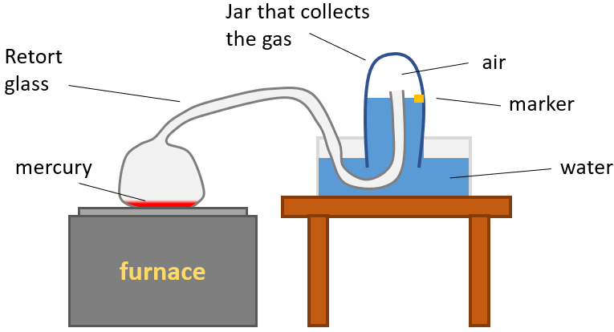

In October 1772, Lavoisier (26 August 1743 – 8 May 1794) set out to explain the longstanding puzzle of why metals gain weight when they form calxes. Lavoisier conducted a series of public experiments, relying on a huge burning lens that focused the sun's rays to produce intense heat. Lavoisier found that a calx of lead, mixed with charcoal and heated by the sun’s rays, gave off a large amount of air as it turned back into metallic lead. This suggested that air, or some part of the air, might somehow responsible for calxes being heavier than expected. Lavoisier also found that when he burned elements like sulfur, they, too, gained weight, apparently by absorbing the same gas.
In England, a scientist named Priestley (1733 – 1804) was studying the red calx of mercury. When heated, this red powder turned back into liquid mercury and gave off a gas. Priestley collected the gas, and to his surprise, it made candles burn bigger and brighter than ordinary air, so he called this gas 'dephlogisted air'. Priestley was at a loss to explain this finding – and eager to share it with all who would listen.
On a trip to Paris two months later, Priestley was invited to dine with the members of the Royal Academy of Sciences. Lavoisier listened with great interest as Priestley described the curious new air he’d discovered. Could this be the gas he’d been looking for – the one involved in rusting and burning? After Priestley left, Lavoisier hurried to the local apothecary to buy his own sample of mercury calx and begin his own experiments on it.
Meanwhile back in England, Priestley continued to explore his new gas. Since it supported fire, he wondered, might it also support breathing? To find out, he trapped a mouse under a glass vessel containing the new air. To his amazement, the mouse seemed perfectly at ease long after it would have died in normal air.
Lavoisier decided to experiment with mercury, in which he put four ounces of mercury into a long-necked glass called retort glass. The neck of the retort glass was confined in a bell jar (using a pneumatic trough), while the liquid level in the bell jar was adjusted to leave 50 cubic inches of air in the bell jar.
The furnace was then lighted and mercury was being heated. As a result, there were a few red spot on the surface of the liquid mercury, which grew bigger in number and size until it covered the whole surface. Meanwhile, the liquid level in the bell jar had increased, meaning that the amount of air inside was decreasing.
Lavoisier found that the air in the bell jar lost three and a half grains and that 8 cubic inches of it disappeared. He also discovered that mercury and the calx had gained three and a half grains. He also found that the gas inside the bell jar would no longer support fire.
Lavoisier argued that the mercury had taken some active gas from the bell jar to produce the calx (active gas is the gas which supports fire). He then proceeded to separate the calx from the pure mercury, and then repeated the same experiment, except this time instead of all the mercury, there was only the 3 and a half grains of calx inside the retort glass. Also the liquid level in the bell jar was raised to a higher level.
As the calx was being heated, drops of liquid mercury was seen inside the retort glass, while the calx itself was slowly disappearing. The volume of air in the bell jar increased by 8 cubic inches, and the weight had increased by 3 and a half grains. Laviosier found that this gas was active, since it was supporting combustion. He also found that the weight of the mercury that was 3 and a half grains lesser than the calx.
Lavoisier incorrectly thought that this active gas was necessary to produce acids, because the gases produced in all common combustions were acidic (based on the litmus test), so he named the active gas "acid producer", or in other words "oxy-gen". In Greek, oxy means sharp tasting or acidic and gen means to produce.
Sources: